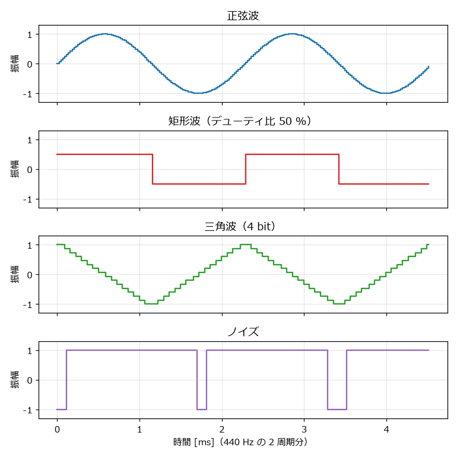
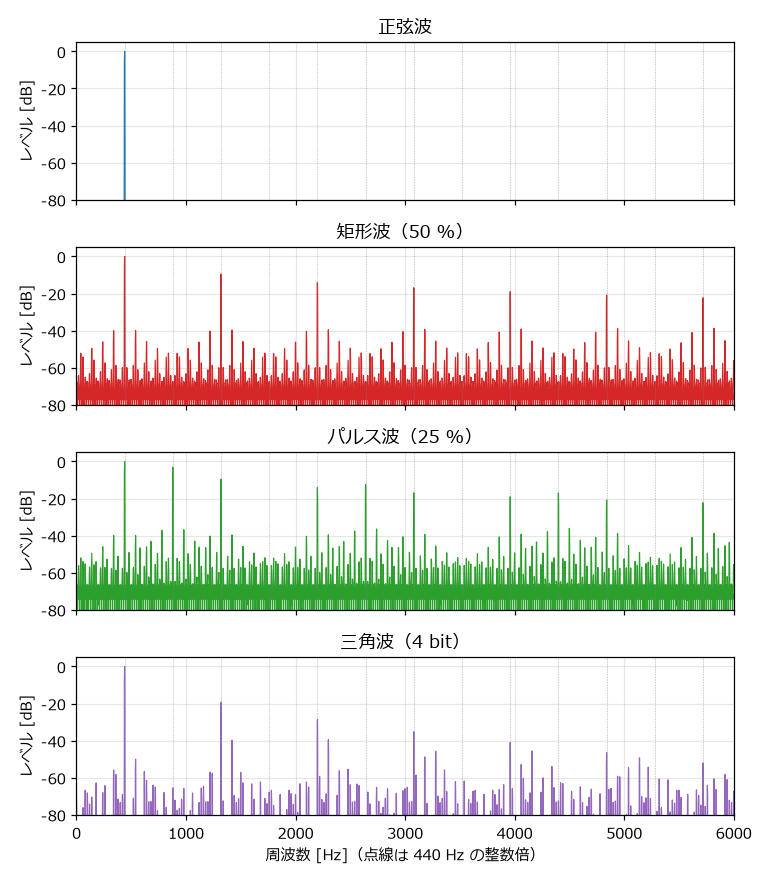
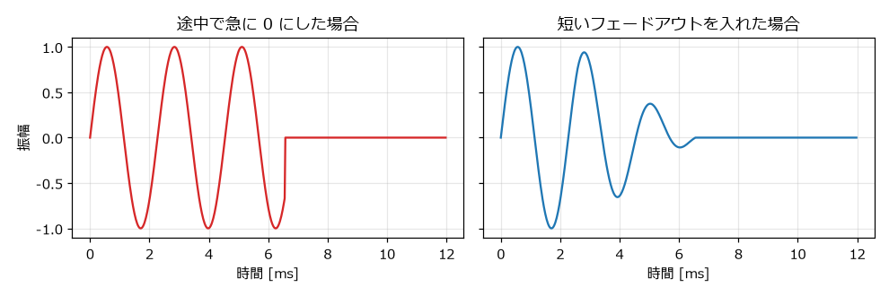

6. Python で波形を作る
この章から、実際にプログラムで音を作る。まず、すべての音の材料となる矩形波・三角波・ノイズを生成し、WAV ファイルとして書き出せるようにする。
6.1. サンプルコードの構成
本書のサンプルコードは、次のモジュールで構成されている。この章では wav_io.py と waveforms.py を扱う。
ファイル |
内容 |
説明している章 |
|---|---|---|
|
WAV ファイルの書き出し |
本章 |
|
矩形波・三角波・ノイズの生成 |
本章 |
|
音量や音程の時間変化 |
「音を形づくる」 |
|
効果音の作例 |
「効果音を作る」 |
|
テキストの楽譜から曲を合成する簡易シーケンサ |
「BGM を作る」 |
|
BGM の作例 |
「BGM を作る」 |
|
Pyxel の音源機能を使う例 |
「制作ツールの紹介」 |
|
pygame-ce で BGM と効果音を鳴らす例 |
|
|
すべての音声ファイルを一括で生成する |
「はじめに」 |
6.2. 音は NumPy の配列で表す
本書のサンプルコードでは、音を NumPy の 1 次元配列で表す。配列の各要素が 1 つのサンプルであり、値の範囲は -1.0 から 1.0 である。44100 Hz で 1 秒の音なら、要素数 44100 の配列になる。この型には Signal という別名を付けている。
NumPy を使うのは、配列の全要素に対する計算を 1 行で書けて、しかも Python の for 文で 1 サンプルずつ計算するより大幅に速いからである。例えば、signal * 0.5 と書けば全サンプルの音量が半分になり、a + b と書けば 2 つの音が重なる。
6.3. WAV ファイルに書き出す
最初に、作った音を WAV ファイルに書き出す関数を用意する。
38def write_wav(path: Path, signal: Signal, sample_rate: int = SAMPLE_RATE) -> None:
39 """モノラル 16 bit の WAV ファイルとして書き出す.
40
41 範囲外の値は -1.0 から 1.0 に切り詰める（クリッピング）。
42 """
43 path.parent.mkdir(parents=True, exist_ok=True)
44 clipped = np.clip(signal, -1.0, 1.0)
45 pcm = (clipped * 32767.0).astype("<i2") # リトルエンディアンの 16 bit 整数
46 with wave.open(str(path), "wb") as wav_file:
47 wav_file.setnchannels(1) # モノラル
48 wav_file.setsampwidth(2) # 1 サンプルあたり 2 バイト = 16 bit
49 wav_file.setframerate(sample_rate)
50 wav_file.writeframes(pcm.tobytes())
この関数は次の手順で書き出す。
np.clipで -1.0 から 1.0 の範囲外の値を切り詰める。範囲外の値をそのまま整数に変換すると、値があふれて大きな雑音になるためである。値に 32767 を掛け、16 bit の符号付き整数（
"<i2"はリトルエンディアンの 2 バイト整数を表す）に変換する。waveモジュールでチャンネル数（1: モノラル）、1 サンプルのバイト数（2: 16 bit）、サンプリング周波数を設定し、データを書き込む。
動作を確かめるため、wav_io.py を単独で実行すると 440 Hz の正弦波を 1 秒間書き出すようにしている。
53def main() -> None:
54 """動作確認として 440 Hz の正弦波を 1 秒間書き出す."""
55 t = np.arange(SAMPLE_RATE) / SAMPLE_RATE
56 signal = 0.5 * np.sin(2.0 * np.pi * 440.0 * t)
57 write_wav(Path("output") / "sine_440.wav", signal)
np.arange(SAMPLE_RATE) / SAMPLE_RATE は、各サンプルの時刻 \(t_n = n / f_s\) を並べた配列である。これを正弦波の式 \(A \sin(2 \pi f t)\) に代入している。
6.4. 位相で波形を作る
正弦波は \(\sin(2 \pi f t)\) で作れたが、この式は周波数 \(f\) が一定であることを前提にしている。効果音では音程を時間とともに変化させたいことが多い。そこで本書では、位相を使って波形を作る。
位相は「波の 1 周期のうち、今どの位置にいるか」を 0 以上 1 未満の値で表したものである。周波数 \(f\) の音では、1 サンプルごとに位相が \(f / f_s\) ずつ進み、1 に達したら 0 に戻る。\(n\) 番目のサンプルの位相 \(\phi_n\) は、それまでの増分を足し合わせて求められる。
ここで \(f_k\) は \(k\) 番目のサンプルの時点での周波数である。周波数が途中で変わっても、位相は途切れずに進むので、滑らかに音程が変化する。
57def phase_from_frequency(frequency: float | Signal, num_samples: int) -> Signal:
58 """周波数（定数または時間変化する配列）から 0 以上 1 未満の位相を作る.
59
60 位相はサンプルごとに frequency / SAMPLE_RATE ずつ進む。
61 周波数を配列で与えれば、音程が滑らかに変化する音を作れる。
62 """
63 freq = np.broadcast_to(np.asarray(frequency, dtype=np.float64), (num_samples,))
64 increments = freq / SAMPLE_RATE
65 phase = np.cumsum(increments) - increments # 最初のサンプルの位相を 0 にする
66 return np.mod(phase, 1.0)
np.cumsum は配列の累積和を求める関数である。周波数には定数と配列のどちらも渡せるように、np.broadcast_to で長さ num_samples の配列にそろえている。
位相さえ求めれば、波形は「位相から値への変換」として書ける。正弦波なら \(\sin(2 \pi \phi)\) である。
6.5. 矩形波
矩形波は、位相がデューティ比より小さいときに高い値、それ以外で低い値を出力すればよい。
69def pulse_wave(phase: Signal, duty: float | Signal = 0.5) -> Signal:
70 """矩形波（パルス波）を作る. duty は 1 周期のうち高い値になっている割合.
71
72 実機と同じく 1 と 0 の 2 値を作り、平均値 duty を引いて直流成分を取り除く。
73 """
74 return np.where(phase < duty, 1.0, 0.0) - duty
np.where(条件, a, b) は、条件を満たす要素を a に、満たさない要素を b にした配列を返す。デューティ比 duty にも配列を渡せるので、デューティ比を時間とともに変えることもできる（「音を形づくる」で使う）。
実機の矩形波チャンネルは、0 と音量の値の 2 つを出力する。このままでは波形の平均値が 0 にならず、平均値の分だけ全体が片側にずれた状態になる。このずれを直流成分という。直流成分は音としては聞こえないが、表現できる振幅の範囲を無駄に使ううえ、音の鳴り始めと鳴り終わりでクリック音（後述）の原因になる。実機では、出力の後段にある回路が直流成分を取り除いている。
そこで pulse_wave では、1 と 0 の 2 値を作った後、その平均値であるデューティ比 duty を引いて直流成分を取り除いている。例えばデューティ比 25 % の場合、出力は 0.75 と -0.25 の 2 値になり、平均値は 0 になる。
6.6. 三角波
ファミコンの三角波は、16 段階の値を 32 ステップで上下させる階段状の波形である。この並びを配列 TRIANGLE_SEQUENCE として用意しておき、位相に応じて値を取り出す。
17# 三角波チャンネルが 1 周期の間に出力する 32 段階の値（4 bit: 0 から 15）
18TRIANGLE_SEQUENCE = np.array(list(range(15, -1, -1)) + list(range(16)), dtype=np.float64)
77def triangle_wave(phase: Signal) -> Signal:
78 """4 bit（16 段階）の階段状の三角波を作る."""
79 step = np.floor(phase * 32.0).astype(np.int64)
80 return TRIANGLE_SEQUENCE[step] / 7.5 - 1.0
位相に 32 を掛けて切り捨てると、0 から 31 のステップ番号が得られる。取り出した 0 から 15 の値を 7.5 で割って 1 を引き、-1.0 から 1.0 の範囲に変換している。
6.7. ノイズ
6.7.1. LFSR の出力を求める
ノイズは「音源チップの仕組み」で説明した LFSR で作る。LFSR の出力は一巡すると元に戻るので、一巡分のビット列をあらかじめ計算しておく。
88def lfsr_sequence(short_mode: bool = False) -> npt.NDArray[np.int64]:
89 """15 bit の線形帰還シフトレジスタ（LFSR）が出力するビット列を 1 周期分返す.
90
91 通常モードでは bit 0 と bit 1、短周期モードでは bit 0 と bit 6 の
92 排他的論理和を最上位（bit 14）に戻しながら右シフトする。
93 """
94 tap = 6 if short_mode else 1
95 register = 1
96 initial = register
97 bits: list[int] = []
98 while True:
99 bits.append(register & 1)
100 feedback = (register & 1) ^ ((register >> tap) & 1)
101 register = (register >> 1) | (feedback << 14)
102 if register == initial:
103 break
104 return np.array(bits, dtype=np.int64)
register & 1 で bit 0 を、(register >> tap) & 1 で bit 1（短周期モードでは bit 6）を取り出し、^ で XOR を計算する。register >> 1 で右に 1 bit ずらし、feedback << 14 で XOR の結果を bit 14 に入れる。レジスタが初期値に戻ったら一巡したと判断して終了する。通常モードでは 32767 個、短周期モードでは 93 個のビットが得られる。
6.7.2. サンプルに変換する
LFSR は 1 秒あたり \(f_{\mathrm{CPU}} / (\text{周期の CPU クロック数})\) 回更新される。インデックス 0（4 クロック）では毎秒約 447000 回であり、1 サンプル（1/44100 秒）の間に約 10 回更新される。そこで、各サンプルの時点までに LFSR が何回更新されたかを計算し、その回数番目のビットを取り出す。
107def noise_from_rate(clock_rate: float | Signal, num_samples: int, short_mode: bool = False) -> Signal:
108 """LFSR を毎秒 clock_rate 回進めたときのノイズを作る.
109
110 bit 0 が 0 のとき +1、1 のとき -1 を出力する。
111 """
112 rate = np.broadcast_to(np.asarray(clock_rate, dtype=np.float64), (num_samples,))
113 sequence = lfsr_sequence(short_mode)
114 position = np.floor(np.cumsum(rate / SAMPLE_RATE) - rate / SAMPLE_RATE).astype(np.int64)
115 bits = sequence[position % sequence.size]
116 return np.where(bits == 0, 1.0, -1.0)
更新回数を sequence.size で割った余りを使うことで、ビット列の末尾に達したら先頭に戻る。ビットが 0 なら +1、1 なら -1 を出力する。周期インデックスで指定する場合は noise_wave 関数を使う。
119def noise_wave(seconds: float, period_index: int, short_mode: bool = False) -> Signal:
120 """ノイズチャンネルの周期インデックス（0 から 15）を指定してノイズを作る."""
121 clock_rate = CPU_CLOCK / NOISE_PERIODS[period_index]
122 return noise_from_rate(clock_rate, seconds_to_samples(seconds), short_mode)
6.8. 音名から周波数を求める
楽譜を扱うには、「A4」のような音名を周波数に変換する必要がある。「最低限の音楽知識」で説明したとおり、音名をいったん MIDI ノート番号に変換し、12 平均律の式で周波数を求める。
26def note_number(name: str) -> int:
27 """音名（例: "A4"、"C#5"、"Bb3"）を MIDI ノート番号に変換する.
28
29 C4（中央のド）が 60、A4 が 69 になる。
30 """
31 letter = name[0].upper()
32 rest = name[1:]
33 accidental = 0
34 while rest and rest[0] in "#b":
35 accidental += 1 if rest[0] == "#" else -1
36 rest = rest[1:]
37 octave = int(rest)
38 return 12 * (octave + 1) + NOTE_OFFSETS[letter] + accidental
41def note_frequency(note: int) -> float:
42 """MIDI ノート番号を周波数 [Hz] に変換する（12 平均律、A4 = 440 Hz）."""
43 return float(440.0 * 2.0 ** ((note - 69) / 12.0))
note_number は、音名の 1 文字目から C を 0 とした半音の数を求め、# と b の数だけ増減し、オクターブ番号から \(12 \times (\text{オクターブ} + 1)\) を加える。C4 なら \(12 \times 5 + 0 = 60\) になる。
6.9. 波形を書き出す
ここまでの関数を組み合わせ、一定の音程の音を作る tone 関数を用意する。
137def tone(frequency: float, seconds: float, wave: str = "pulse", duty: float = 0.5) -> Signal:
138 """一定の音程の音を作る. wave には "pulse"、"triangle"、"sine" を指定する."""
139 phase = phase_from_frequency(frequency, seconds_to_samples(seconds))
140 if wave == "pulse":
141 return pulse_wave(phase, duty)
142 if wave == "triangle":
143 return triangle_wave(phase)
144 if wave == "sine":
145 return sine_wave(phase)
146 raise ValueError(f"unknown wave: {wave}")
waveforms.py を実行すると、output フォルダに各波形の音が書き出される。
1python waveforms.py
書き出される音は、「音とデジタル音声の基礎」と「音源チップの仕組み」に掲載した音と同じである。生成した波形を図 6.1 に示す。


図 6.1 生成した 4 種類の波形
6.10. スペクトルで確かめる
波形にどのような周波数の成分が含まれているかを表したものをスペクトルという。図 6.2 は、生成した波形のスペクトルである。横軸が周波数、縦軸が各周波数の成分の大きさ（最大の成分を 0 dB とする）を表す。


図 6.2 生成した波形のスペクトル
正弦波は 440 Hz の成分だけを持つ。矩形波（50 %）では 440 Hz の奇数倍の位置に、矩形波（25 %）では 4 の倍数を除く整数倍の位置に、大きな成分が並んでいる。いずれも「音源チップの仕組み」で説明した倍音の性質のとおりである。
一方、矩形波や三角波のスペクトルには、点線（440 Hz の整数倍）から外れた位置にも小さな成分が多数現れている。これは「音とデジタル音声の基礎」で説明したエイリアシングによるものである。本書の方法では、高い周波数の成分を取り除く処理（帯域制限）をせずに、1 サンプルごとに階段状の波形の値を直接決めているため、ナイキスト周波数（22050 Hz）を超える倍音が低い周波数に折り返されている。
エイリアシングの成分は、低い音ではほとんど気にならないが、高い音ほど目立ち、ざらついた音や濁った音に聞こえる原因になる。対策としては、波形の切り替わり部分を補正する方法（PolyBLEP など）や、高いサンプリング周波数で生成してから低域通過フィルターをかけて間引く方法（オーバーサンプリング）がある。本書では、仕組みのわかりやすさを優先してこれらの対策は行わない。
6.11. クリック音を防ぐ
音を途中で急に止めたり、急に鳴らし始めたりすると、「プチッ」という雑音が聞こえることがある。これをクリック音という。図 6.3 の左のように、波形の値が一瞬で大きく変化すると、その部分に幅広い周波数の成分が含まれるためである。


図 6.3 音を急に止めた場合と、フェードアウトを入れた場合
これを防ぐには、音の始まりと終わりに数ミリ秒の短いフェードを入れる。
125def fade_edges(signal: Signal, seconds: float = 0.005) -> Signal:
126 """音の始まりと終わりを短く滑らかにし、プチッというクリック音を防ぐ."""
127 length = min(seconds_to_samples(seconds), signal.size // 2)
128 if length == 0:
129 return signal
130 ramp = np.linspace(0.0, 1.0, length)
131 result = signal.copy()
132 result[:length] *= ramp
133 result[-length:] *= ramp[::-1]
134 return result
np.linspace(0.0, 1.0, length) で 0 から 1 へ直線的に増える配列を作り、先頭に掛ける。末尾には ramp[::-1]（逆順にした配列）を掛ける。既定の 5 ミリ秒は、聞こえ方を変えずにクリック音を防げる程度の長さである。
なお、矩形波はもともと値が急に変化する波形なので、波形の途中の変化はクリック音にならない。問題になるのは、音の鳴り始めと鳴り終わりで値が 0 との間を急に行き来する場合である。
6.12. 練習
tone関数を使って、C4、E4、G4、C5 を 0.25 秒ずつ順に鳴らす音を作り、np.concatenateでつないで書き出してみよう。同じ音を矩形波と三角波で作り、音色の違いを聞き比べてみよう。
noise_waveのperiod_indexとshort_modeを変えて、どのような音になるかを確かめてみよう。